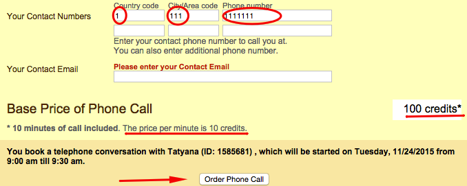
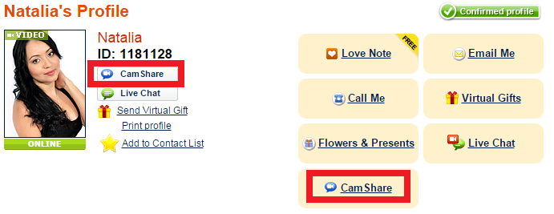
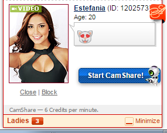
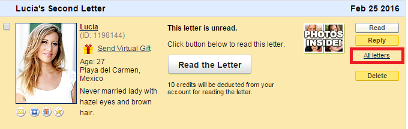
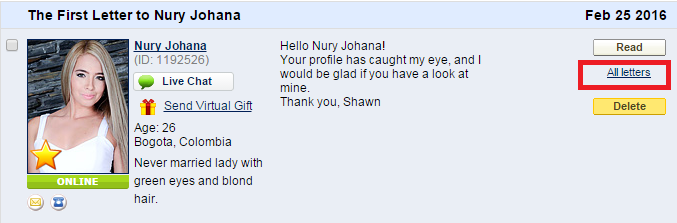
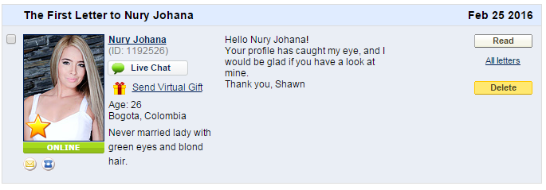
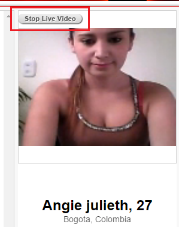

Membership & Balance
Membership
By subscribing to membership for the first time at the discounted fee of only $2.99, you will receive all of the following benefits:
- 1) A one-time package of 20 Welcome Credits to thank you for your subscription. These credits can be used for any of the services we provide, depending only on your own preference.
- 2) 10 FREE Live Chat sessions lasting 3 minutes each to help you begin communicating with the members of your interest. This package is worth 30 whole credits, based on the fact that it is an offer of 30 total minutes of chat.
- 3) The ability to send unlimited Love Notes to the ladies whom you never corresponded with before.
- 4) Ability to check your account history each month and purchase additional credits.
The 10 FREE Live Chat sessions and the ability to send unlimited Love Notes renews every month together with your subscription.
Free chats have been created as ice-breakers for the members whom you never communicated with but would like to get to know.
They can’t be added up and used to chat with one member; moreover they are only available for the members whom you never communicated with before.
If you subscribed with PayPal, AmoLatina will be unable to cancel the recurring payment for you.
To cancel your automatic payment, please go to PayPal:
- 1. Go to www.paypal.com and log in to your account.
- 2. Click ‘Profile’ near the top of the page.
- 3. Select ‘My money'.
- 4. In the ‘My pre-approved payments’ section, click ‘Update'.
- 5. Select the merchant whose agreement you want to cancel and click ‘Cancel’.
- 6. Click ‘Cancel Profile’ to confirm your request.
When going to your "profile" be sure to double click on the tab to open the full Profile page as you may not get all the options if you just hover you mouse over it. Once the page loads you will see the section that says 'My money'.
20 Welcome Credits are a one-time package to thank you for your subscription which is only added upon initial subscription.
Each following month you will receive 30 credits’ worth of services in 10 free 3-minute chats, ability to send unlimited Love Notes, purchase additional credits and check your account balance.
Credits operations
To check how many credits you have remaining in your account, please go into the Purchase credits section of My Account.

Right there you will see how many credits you have available in your account.

If in "My account" page you don't see any label by the coins icon it means that your current balance is zero.
If you are already subscribed you can alternatively go into the Purchase credits section of My Account.
Right there you will see how many credits you have available in your account.
Payment questions
When your payment is not going through it may be due to one of the following reasons:
-
1. You recently made a purchase but have not spent any credits since. The system will prevent you from making an additional purchase in order to prevent multiple transactions made in error.
As an alternative, you may purchase larger credit packages which will save you from topping up so often.
-
2. Your bank is blocking the transaction.
AmoLatina is part of Anastasia International, an international company that employs a number of payment merchants worldwide.
Some banks may require additional verification from the account holder when they see an international transaction.
When a transaction is declined by a member’s bank, AmoLatina does not hold any of the funds. You may however see the declined transaction as pending and it will be released to your account depending on the internal policies of your bank.
Please contact your bank in order to authorize all further payments to AmoLatina, part of Anastasia International. You will then be able to make a purchase on our website.
-
3. Additional verification is required by AmoLatina.
We work very hard to protect our members from fraudulent activity and as a safeguard may conduct checks on payments and transactions made on our website.
Please contact our Customer Support team who will look into the details of your purchase history and provide you with an explanation.
The standard membership renewal rate is $9.99, and this is the amount that it will cost to renew your membership after the first month.
Upon subscribing we invite our members to review the Terms and Conditions of our monthly membership program. (link to the article)

The 10 FREE Live Chat sessions and the ability to send unlimited Love Notes renews every month together with your subscription.
$15.99 is the cost of 20 credits on AmoLatina.
Upon subscribing we invite our members to review the Terms and Conditions of our monthly membership program. (link to the article) Automatic top-up of 20 credits is initially set up on your account when you subscribe.
Automatic Purchasing is our option that allows you to stay in touch with the lady, even when your credits run out in the middle of Live Chat or Camshare. It automatically purchases additional credits, required to continue the communication, so that your romantic conversation won't suddenly be cut off because you lack a few credits.
However, you have always have the option to disable it by unchecking the box "Allow Automatic Purchasing" in the "My settings and Password" menu and then by pressing the "Save" button.
Services
Call Me
Five days before your lady's birthday you will receive a notification to your inbox. In order to get the 5 bonus minutes you need to click on the "receive 5 bonus minutes" link. Note that this offer will expire 7 days after her birthday. After selecting the bonus the minutes will be added automatically once you complete the reservation form.

To place a Reservation Phone Call please go to the Call Me part of the Services section.

You need to select your time zone, the date and time you wish to speak with your lady.
Please check that your local time and your time zone are set correctly before confirming your phone call.


It is also very important that you have the correct contact number indicated in the corresponding fields.
Kindly check the country code (for example, 1 for the USA, 44 for the UK etc.), your area code (3 digits only in this field) and your telephone number. You may also indicate an additional number we will be able to connect you on in the event that the primary phone number is unreachable.
Please ensure that you have at least 100 credits in your account as otherwise you will not be able to place the reservation (with the exception of a repeat call to the lady that is charged 70 credits).
The lady’s time will be set automatically depending on her location and you will be able to review it and set the most convenient time to suit you both.
The system will notify you that 100 credits will be deducted from your account for the first 10 minutes. Please note that each additional minute costs 10 credits, therefore if you wish to speak with your lady for longer than 10 minutes, it is always a good idea to top-up before the call takes place.
The lady will now receive a notification and will have the option to accept the time you suggested or offer a new one.
You will be notified in both cases- if the lady accepts your time or proposes a new one. If she proposes a new one, you can only accept it or cancel the call and place a new reservation.
You will receive a call at the appointed time; the system will automatically connect you with your lady and the interpreter.
If there is an issue and either one of the parties is unable to accept the call and call back within 15 minutes, the deposit will be refunded to your account. Please check your Purchase Credits section, tab History for confirmation.
If you do not see the call in the list as the status Lady proposed a new time or Awaiting appointed time, something went not as expected and you will need to place the reservation again.
This happens when a lady suggests a different time and you do not accept it in time before a call is due to take place or if the time was set incorrectly and you did not pick it up when the phone rang.
You will be able to click on Archived Phone Calls and see the status of the call. We will be happy to look into it for you to find out exactly what went wrong. Please contact our Customer Support team with your ID and we will be happy to assist you.
CamShare
If the Lady is online and the quality of her internet connection allows to use our premium Camshare service, you will see the option in the lady’s profile.
Simply click on the blue Camshare icon (as below) and await your lady’s response. Billing will start as soon as your Lady sends you a reply. Her video will be started automatically.

You will also be able to accept an invitation from the la, please note however that the ladies do not have the option to invite you to Camshare.
If the Lady is online and the quality of her internet connection allows to use our premium Camshare service, the invitation will be sent automatically to you by the system.

Billing will start automatically, as soon as you accept the lady’s invitation.
One possible reason for the lack of signal from your camera is that there is another program already using your webcam while you are trying to use Camshare. Please try closing down all other programs apart from your browser and see if that helps.
Please be aware that our Camshare service requires a high-speed internet connection on both yours and the lady's end in order for you to see her large, HD video feed. If the lady does not have a good internet connection, she may not be able to see your video.
Please also check that you have the latest version of Adobe Flash Player as this is required for all our video-related services.
As well as the aforementioned software requirements, please ensure you camera is powered on and that you have enabled your video feed by clicking on the camera button at the bottom of the chat window. If you do not see this 'allow' button then please change your screen resolution to a number higher than 900.
Please make sure your camera is not being used by any other program, such as Skype as there is a flash feature that prevents multiple applications from accessing your webcam simultaneously. Please completely shut down any other applications that employ your webcam before attempting your next Camshare.
It is also important to make a distinction between Live Chat with video and Camshare. All your current sessions in Live Chat have to be shut down before starting a Camshare, these are two different services and cannot run side by side.
Correspondance
If you received too many messages to your inbox since the lady wrote to you, you will be able to find the letter by doing one of the following:
- 1) Finding a message to the lady in your outbox, then clicking All Letters.
- 2) Please click on All letters on Any Lady in your inbox.
In the address bar please replace the ID of the Lady whose letters have appeared in the window with the ID of the Lady whose letters you would like to read.

This Hello note is sent to the lady when you add her to your Contact list.

This was the lady will know that you viewed her profile and saved it to your list of selected contacts, will have a chance to visit your profile in return to see if you could be a potential match.
Once you have opened a letter and paid for it, you will not be charged again for reading it.
Live Chat
If you do not use some of the free chats in the month of your current subscription, they will expire when the next package of 10 free chats is added.
If you need to check how many free chats you have left, please contact our Customer Support Team who will be happy to answer your question.
The censoring system in AmoLatina Live Chat is set up to prevent exchange of personal information. Various "stop" words, some words starting with a capital letter, numbers and characters (such as @) will be replaced by dots, as well as addresses, surnames and so on.
This is done for our members' and ladies' personal safety as we can never guarantee that this information will be safe once you exchange it across the open Internet.
Remember that one minute of Live Chat costs 1 credit.
One minute of Live Chat with Video costs 2 credits.

Please note that the ladies do not have the option to switch off their cameras.
To stop streaming please Click Stop Live Video, as below.

Note, that if you used CamShare you will be charged 6 credits per minute.
The censoring system in Amolatina Live Chat is set up to prevent exchange of personal information. Various "stop" words, some words starting with a capital letter, numbers and characters (such as @) will be replaced by dots, as well as addresses, surnames and so on.
This is done for our members' and ladies' personal safety as we can never guarantee that this information will be safe once you exchange it across the open Internet.
Photo
Each photo you upload should be in .jpeg or .jpg format and less than 500KB in size. If a photo is in a different format or too large you may not be able to upload it.
We recommend using either Microsoft Image Editor or Microsoft Paint in order to reduce the size of the original image if that is necessary.
If you are using an Apple Mac, you may also experience difficulties uploading a photo.
If you are unable to upload a photo to your profile, please send it to support@amolatina.com along with your Amolatina ID number. We will be happy to upload the photos to your profile on your behalf.
Enjoying the Private Photos of the member of your interest is completely free of charge, provided that you have exchanged Letters, had Live Chat or carried out a Camshare session with that member. Introduce yourself today by sending a Letter or by sharing time on Camshare or Live Chat. Thereafter, please browse the Private Photos for free.
Gifts
Yes, the Virtual Gift stays on your profile for 7 days, and you can view it as often as you like.
LoveNotes
A Love Note is an easy way to start communication with one of the members that has caught your interest. It is absolutely free for our subscribed members– simply go to the member’s profile, find the “Love Note” icon, choose one of the cards we offer and click “Send for Free” before opting for any other feature on offer.


Bonuses & Discount
Bonuses & Discount
If you get some bonus minutes for a member’s birthday you can activate them by clicking the appropiate link in the notification in your inbox. These bonus minutes will be automatically added to your account. As soon as the standart 10 minutes of a reservation.

Members Communication
Communication Rules
AmoLatina Anti-Scam Policy can be found here
Safety Tips
- Never send any money to another member.
- Exchange contact information with a member only through our “Call Me” service.
- Conduct video chats with your partner once in a while.
Scam and reimbursements
- A member who misidentifies themselves. (i.e., someone who uses another member's profile without permission to communicate with you). We will reimburse all credits incurred communicating with this member.
- A member requests money or expensive gifts from you. We will reimburse all credits spent communicating with this member and ban the member permanently.
- A member deliberately misrepresents some details in their profile: age, children, gender, marital status or language level. We will reimburse all credits you incurred communicating with this member and ban the member permanently.
- Delivery of gifts or flowers ordered through the system does not take place. We will reimburse all credits incurred for the flower or gift delivery order.
Not a scam
- Some mistakes occurred in the translation of a letter.
- If a member doesn’t answer all questions in an email.
- If on any level of your communication, the member takes the decision to stop developing your relationship.
- If a member has photos of relatives, friends, ex-partners and other personal info posted on any social network.
- If a member wears rings on their fingers. Wearing rings does not mean a person is married, regardless of which finger it is on.
According to the AmoLatina company policy and as required by IMBRA, the exchange of personal contact information such as e-mail addresses, telephone numbers and postal addresses is not allowed using our online services. Attempts to exchange such delicate information may get censored. This is only done for our members' own privacy and security.
In order to make such an exchange possible, we have created our specialized offline services. All members are able to exchange personal contact information safely and consensually between them in a live Phone Call, a note attached with a Flowers & Presents. Over many years, these methods have proven to be most effective and are highly recommended.
Please note if you hold a US citizenship, before you are allowed to exchange contact information with the lady of your choice, we will ask you to complete and sign a Background form.
If you feel that a Lady you have been in communication with is dishonest, we would strongly recommend you to file a complaint. You can do this online by clicking on the following link.
We uphold a very strict Anti-Scam policy. (ADD the link) Any lady on the site found to be in breach of any of the terms of the policy will promptly be removed from the site.
Please provide us with as much information as possible to support your claim; we will do our best to resolve the situation as quickly and completely as possible. We take complaints of this nature very seriously, and we would like to do everything we can to help you out.
Members interaction
AmoLatina employs a dedicated verification team that works hard to provide confirmed and updated information on each member, and regularly verifies their identities in order to avoid outdated information or any possible fraud.
The AmoLatina verification team checks each member’s correspondence and immediately addresses any question of incorrect use of the AmoLatina mailing system. AmoLatina also incorporates an Anti-Scam Policy, a policy which leads the fight against scammers and online fraud.
The sincerity and honesty of the members is also ascertained by selective letter screening and regular personal interviews with each member.
The members of AmoLatina are not paid for participating in communication on AmoLatina.com. Our website is open to all members free of charge.
If you are not sure about a particular individual, we would be happy to verify their status for you personally if you simply send their AmoLatina ID number to our Customer Support team.
If you care to speak with a particular member yourself, call them now and obtain their private contact information using our Call Me service or send them a gift using Flowers & Presents attaching your own contact information.
Please note if you hold a US citizenship, before you are allowed to exchange contact information with the lady of your choice, we will ask you to complete and sign a Background Form (link to IMBRA).
If you want to obtain the contact information of the member of your interest, please feel free to contact us and we will guide and assist you.
Mobile App
Mobile App
Through our android app you can exchange messages (Correspondence System), have Live Chats and Camshare sessions with the members of your preference.
Our IOs app at the moment offers only Live Chat services.
AmoLatina has launched a special app ( LDate) that you can find in https://itunes.apple.com/en/app/ldate-casual-dating-app/id1039830544?l=en&mt=8
Please download the latest version of the app https://play.google.com/store/apps/details?id=com.amolatina&hl=en
If you already have it, please follow these steps:
- 1) Press your device's Menu button | select Settings (or System Settings).
- 2) Tap Application Manager (or Apps).
- 3) Tap the app icon of AmoLatina.
- 4) Tap Clear Data.
My profile & Settings
My profile
You can submit up to 4 photos to your profile- 1 thumbnail and 3 full-sized photographs that will be seen in your profile.
To submit your photo for the catalogue please click on Upload Photo link and choose the file with the photo on your computer.

The photos can be in PNG, JPEG or GIF format and up to 10MB each.
When your profile is invisible or has been hidden in the catalogue, no new ladies are able to send you letters.
If you do not wish to be visible to new ladies, please contact our Customer Support Team who will be able to help you instantly.
You probably already have an account with us. Please, click Sign in and enter your email and password. If you don’t remember the password


Notifications
Your email provider may be preventing notifications from our domain.
Please contact our Customer Support team who will be able to confirm the information and reset the notifications system, if required.
Additionally, we recommend adding our email address to the Safe Senders List of your personal email.
You can click on the unsubscribe link in the notifications you receive from AmoLatina.

In addition, if you do not wish to receive notifications to your private email address, please contact our Customer Support team who will be glad to assist you.